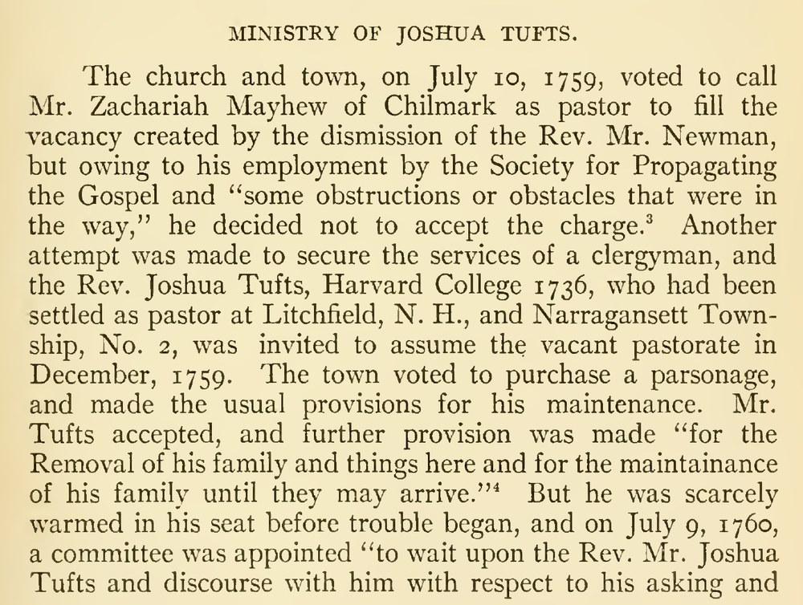
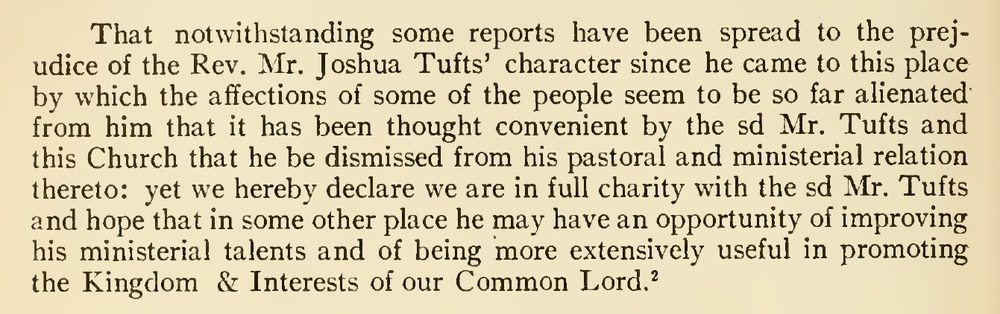

Biography
Joshua Tufts was born at Newbury on October 4, 1716, a son of the Rev. John Tufts and Sarah (Bradstreet) Tufts. A Hollis scholarship paid most of his way through Harvard College, and he graduated in 1736. He preached at Medford in 1738, declined a call from Arundel (now Kennebunkport), Maine, in 1739, and in 1741 settled as pastor at Litchfield, New Hampshire, where he was ordained on December 9 and dismissed in 1744. From 1756 to 1758 he preached in one of the Narragansett townships of Maine (Tufts Kinsmen, Vol. I, p. 34, no. 10-2).
Minister at Edgartown, 1759–1760

Charles Edward Banks’s History of Martha’s Vineyard tells how the church and town of Edgartown, having failed to secure Zachariah Mayhew of Chilmark, turned to him at the end of 1759:
“Another attempt was made to secure the services of a clergyman, and the Rev. Joshua Tufts, Harvard College 1736, who had been settled as pastor at Litchfield, N. H., and Narragansett Township, No. 2, was invited to assume the vacant pastorate in December, 1759. The town voted to purchase a parsonage, and made the usual provisions for his maintenance.”
Charles Edward Banks, The History of Martha’s Vineyard, Dukes County, Massachusetts, vol. 2, Town Annals (1911), p. 155. Internet Archive
The town also provided “for the Removal of his family and things here.” Within months, Banks writes, “he was scarcely warmed in his seat before trouble began,” and on July 9, 1760, a committee was appointed to discuss with him “his asking and taking a dismission,” with a sum of money voted him “provided he asks and obtains a dismission” (Charles Edward Banks, The History of Martha’s Vineyard, Dukes County, Massachusetts, vol. 2, Town Annals (1911), pp. 155–156. Internet Archive). The church’s report, which it adopted, recommended his release in careful words:

“That notwithstanding some reports have been spread to the prejudice of the Rev. Mr. Joshua Tufts’ character since he came to this place by which the affections of some of the people seem to be so far alienated from him that it has been thought convenient by the sd Mr. Tufts and this Church that he be dismissed from his pastoral and ministerial relation thereto: yet we hereby declare we are in full charity with the sd Mr. Tufts and hope that in some other place he may have an opportunity of improving his ministerial talents and of being more extensively useful in promoting the Kingdom & Interests of our Common Lord.”
Charles Edward Banks, The History of Martha’s Vineyard, Dukes County, Massachusetts, vol. 2, Town Annals (1911), p. 156. Internet Archive
“The exact nature of the disaffection indicated by his involuntary exit is not known,” Banks concludes, “but it may have been an echo of the troubles of his predecessor,” the Rev. John Newman. A note adds that the town then reconsidered the purchase of a parsonage and put part of the money “to pay the towns debts,” and that Mr. Tufts “was later settled at Cumberland, N. S.” (Charles Edward Banks, The History of Martha’s Vineyard, Dukes County, Massachusetts, vol. 2, Town Annals (1911), p. 156 and note. Internet Archive).
Chaplain at Fort Cumberland, Nova Scotia
The family record follows him north. After a short stay at Pownalborough (now Wiscasset), Maine, he went to Nova Scotia, preached at Louisbourg and for several months at Halifax, and in September 1761 settled at Cumberland, where he received land and served as chaplain to the British garrison at Fort Cumberland (the former Fort Beauséjour). In a letter of September 25, 1761, to his father-in-law, Capt. William Ellery of Cape Ann, he reported that he was “employed as Chaplain in the Garrison, and minister to the inhabitants.” His wife and children, left at Edgartown, joined him by 1762. The family later moved to Halifax, where he died on March 12, 1767, and his wife six days later; both were buried at St. Paul’s Church on April 1, 1767 (Tufts Kinsmen, Vol. I, p. 34–35, no. 10-2).
See also the Harvard graduates list.
Service Record
Town: Newbury, Mass.; Litchfield, N.H.; Edgartown, Martha’s Vineyard; Fort Cumberland and Halifax, Nova Scotia · Dates: 4 October 1716 – 12 March 1767
No military service. From 1761 he was chaplain to the British garrison at Fort Cumberland, Nova Scotia (Tufts Kinsmen, Vol. I, p. 34–35).
Family Connection
Father: Rev. John Tufts (Harvard 1708), minister at Newbury. Mother: Sarah (Bradstreet) Tufts. Fourteen children are listed, among them Capt. John Tufts, master mariner; William Ellery Tufts of Nova Scotia; Capt. Samuel Tufts (1758–1819), master mariner; Joshua Bradstreet Tufts (1760–1835); and Rowland Cotton Tufts, born about 1766 (Tufts Kinsmen, Vol. I, p. 34, 66–68, no. 10-2; family 28).
Relatives with profiles on this site: father Rev. John Tufts (Harvard 1708); son Capt. Samuel Tufts (1758–1819).
Spouse(s)
- Abigail Ellery (b. January 25, 1725/6, at Gloucester; d. March 18, 1767, at Halifax), daughter of Capt. William and Dorcas (Elwell) Ellery of Gloucester. The marriage is recorded at Gloucester under September 13, 1741 (Tufts Kinsmen, Vol. I, p. 34).
Authoritative IDs / Index Numbers
| Source | ID / status |
|---|---|
| Perseus person index (auth=) | Note: Pending further work. |
| Find a Grave memorial | Note: Pending further work. |
| Brooks, History of Medford (1855) register no. | Note: Pending further work. |
| Mass. Soldiers and Sailors | Not yet checked for this page |
| DAR ancestor no. | Note: Pending further work. |
| FamilySearch ID | Note: Pending further work. |
| Geni profile | Note: Pending further work. |
| WikiTree ID | Note: Pending further work. |
| Town / vital records | Medford VRs not yet checked by volume and page |
Only IDs confirmed against dates and family are given as matches. “Not yet checked” means the source has not been searched; “Checked, not found” means it was searched without a match.
⚑ Unverified
Year of death: Banks says he “died in 1766” (p. 156, note); the family record gives March 12, 1767, at Halifax. The Maine township: Banks says “Narragansett Township, No. 2”; the family record says Narragansett No. 1 (Buxton). Date of the Edgartown call: the family record dates it July 10, 1759, but Banks gives that date for the call to Zachariah Mayhew and places the invitation to Mr. Tufts in December 1759. Note: Pending further work.
Links and Resources
Every source, record, map, survey, marker and artifact tied to this person, gathered in one place. Page numbers are given where a book is cited.
Maps, Surveys and Artifacts
- — Clipping: the ministry of Joshua Tufts at Edgartown, 1759–1760. Detail of p. 155, Banks, History of Martha’s Vineyard , vol. 2 (1911): the town’s call to the Rev. Joshua Tufts, December 1759, and the
- — Clipping: the Edgartown church’s statement on Mr. Tufts, 1760. Detail of p. 156, Banks, History of Martha’s Vineyard , vol. 2 (1911): the church committee’s report recommending his dismission. Image:


Markers, Plaques and Places
- Harvard graduates — See also the
Digitized Books and Journals
- Source: Internet Archive (full page) — …History of Martha’s Vineyard, vol. 2 (1911): the town’s call to the Rev. Joshua Tufts, December 1759, and the committee of July 9, 1760.Image: Charles Edward Banks, The History of Martha’s Vineyard, vol. 2 (1911). Public domain.
- Source: Internet Archive (full page) — …1760. Detail of p. 156, Banks, History of Martha’s Vineyard, vol. 2 (1911): the church committee’s report recommending his dismission.Image: Charles Edward Banks, The History of Martha’s Vineyard, vol. 2 (1911). Public domain.